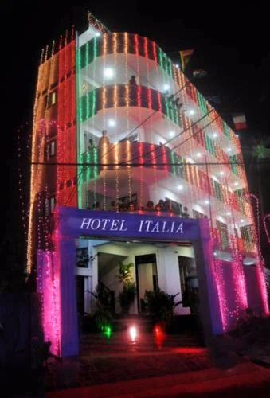
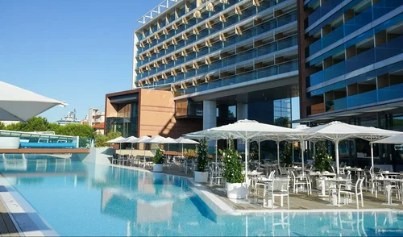
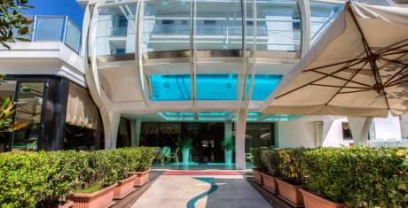

| 
Отель Italia расположен в 2 минутах ходьбы от пляжа в оживленном районе Римини Марина-Центро. Предоставляется бесплатный Wi-Fi. Стойка регистрации и бар работают круглосуточно.В просторных номерах установлены ЖК-телевизоры со спутниковыми каналами. В некоторых номерах имеется меблированный балкон.Каждое утро сервируется завтрак "шведский стол" со сладкими и солеными блюдами, включая домашнюю выпечку и пирожные. Также на завтрак подают ветчину, сыр и яйца. Гостям предоставляются скидки в ресторанах, барах и дискотеках этого района.На террасе отеля Italia можно отдохнуть с напитком из бара. Также к вашим услугам частная парковка и стойка регистрации, где можно заказать экскурсии по Римини и окрестностям. |
| 
Курортный спа-отель Almar Jesolo расположен на берегу моря в районе Лидо-ди-Езоло. К услугам гостей частный пляж, открытый бассейн, сауна и бесплатный прокат велосипедов. На всей территории отеля предоставляется бесплатный Wi-Fi. Гости также могут бесплатно посещать оздоровительный и спа-центр.В современных номерах имеется собственная ванная комната с ванной или душем, биде и феном. В числе стандартных удобств — кондиционер, телевизор с плоским экраном и электрический чайник. Кроме того, в распоряжении гостей каждого номера терраса.Ежедневно в ресторане Mediterra сервируют завтрак «шведский стол». В ресторане с видом на море также предлагают на обед и ужин традиционные блюда венецианской кухни по меню.В спа-центре есть крытый бассейн, сауны и фитнес-зона с панорамным видом. Проводятся разнообразные спа-процедуры, в том числе талассотерапия с использованием морской воды.На территории обустроена бесплатная парковка. В 30 минутах езды от отеля Almar Jesolo находится деревня Пунта-Саббиони, откуда на водных автобусах вапоретто можно добраться до Венеции. Расстояние до аэропорта Венеции имени Марко Поло составляет 35 км. |
| 
Отель Boemia расположен на морском побережье города Риччоне, всего в нескольких шагах от песчаного пляжа. На территории работает открытый бассейн с подогревом. В распоряжении гостей номера с кондиционером и спутниковым телевидением.Ресторан открыт на завтрак и ужин. Гости могут посетить оздоровительный центр с турецкой баней. В числе удобств пункт проката велосипедов, запирающееся помещение для хранения велосипедов с небольшой ремонтной мастерской и бесплатная услуга чистки велосипедной экипировки. По запросу администрация отеля Boemia организует велосипедные экскурсии с гидом.Отель Boemia находится на знаменитой улице Грамши, где работают многочисленные магазины, бары и рестораны. На пляже отеля-партнера обустроена детская игровая площадка и проводятся досуговые мероприятия. |